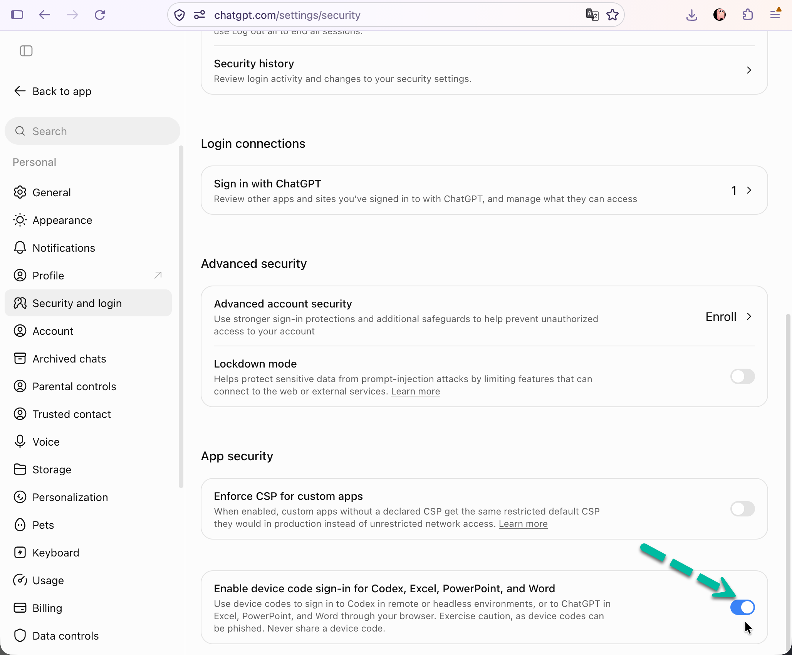

龍蝦養殖實務：課前安裝說明
臺南市國教輔導團科技領域分團 第九場研習「教學的 AI 助理」｜11/19（四）9:10–12:30｜高雄市中山國中科技中心 電腦教室
給參加的老師
研習有三小時，但想把時間都留給實際操作，所以請在 參加研習前 照著安裝影片和這份說明，把 Hermes 裝好。 這次研習用 Hermes 來「養龍蝦」：它和前段時間很紅的龍蝦（OpenClaw）是同一類的 AI Agent，但安裝簡單得多，今天學的東西兩邊都通用。
研習在高雄市中山國中科技中心的電腦教室上課（小港區漢民路 352 號），但 請帶自己的筆電，不要用教室的電腦。Hermes 要裝在你會帶回家的電腦上，研習期間會做一些重要資訊的設定，還是用自己的電腦保險一些。
- 安裝影片：
- 研習手冊（當天的流程和要打的句子都在裡面，可以先看）：https://tinyurl.com/1119hermes
- 整個過程要連網路。研習當天的重點是讓 Hermes 讀你的信、寄信、再接到 Telegram，第四步「準備 Gmail 的應用程式密碼」和手機上的 Telegram 請一定要準備。
你需要準備
- 一台自己的筆電（不是學校教室的電腦），研習當天帶來，記得帶電源線
- Mac：Apple 晶片（M1 以後）可以裝桌面版；Intel 晶片的 Mac 不能裝桌面版，要改裝 CLI 版（見常見問題）。 不確定的話，點左上角的蘋果圖示 →「關於這台 Mac」，「晶片」那一欄寫 Apple M 開頭就是 Apple 晶片。
- Windows：Windows 10 或 11
- 一個 ChatGPT 帳號，用來幫 Hermes 接上模型
- 一個 Gmail 帳號（個人或學校的都可以），研習當天會讓 Hermes 讀這個信箱、從這個信箱寄信（見第四步）
- 一支裝好 Telegram 並且已經登入的手機。研習當天會把 Hermes 接到 Telegram，讓它把信件摘要推到手機；電腦上也要能用同一個帳號登入 Telegram 網頁版 https://web.telegram.org
一、打開 ChatGPT 的 device code 授權
影片教學
文字教學
Hermes 登入 ChatGPT 的方式要用到這個設定，它預設是關閉的，請先把它打開：
- 用瀏覽器打開 https://chatgpt.com ，登入你的帳號。
- 點左下角的頭像，選
設定/Settings。 - 進入
安全性與登入/Security and login頁面。 - 找到
應用程式安全性/App security授權的開關，把它打開。開關的名稱可能是英文，例如啟用 Codex、Excel、PowerPoint 和 Word 的裝置代碼登入/Enable device code sign-in for Codex, Excel, PowerPoint, and Word，以畫面上的文字為準。

Figure 1: 打開 ChatGPT 的 device code 授權
如果你的 ChatGPT 是學校或單位統一開的工作區帳號，這個開關可能是灰色的或看不到，要請管理員打開，或改用個人帳號。
二、下載、安裝、設定 Hermes
文字教學
下載與安裝
到官方網站 https://hermes-agent.nousresearch.com/ ，往下拉到
Hermes Desktop App，下載桌面版（不要用終端機指令那一種）。
Figure 2: Hermes 官方網站
- 執行安裝檔：
- Mac 下載的是 Hermes-Setup.dmg：打開後把 Hermes 圖示拖進「應用程式（Applications）」資料夾，再到「應用程式」裡打開 Hermes。如果跳出警告，選「打開」。
- Windows 下載的是 Hermes-Setup.exe：直接執行。
- 按
Install。安裝程式會自動上網下載需要的元件，大約幾分鐘（也可能要幾十分鐘 -_-），等它跑完就好。- Windows 安裝到一半如果跳出要安裝 Visual Studio，請選「是」，選「否」會沒辦法繼續安裝。
連接 ChatGPT
- 安裝完成後按
Launch，會出現開始設定 Hermes Agent的畫面。上面兩個選項（付費模型、本地模型）都不要選，點其他提供方/Other Providers，再選ChatGPT or Codex Subscription。 - Hermes 會自動打開瀏覽器，用你的 ChatGPT 帳號登入，按
Continue/繼續。 - 瀏覽器會要你輸入一組九個字元的驗證碼。回到 Hermes 的畫面，驗證碼就在那裡，把它複製貼上（不能貼的話就照著打）到瀏覽器，按
Continue/繼續。 - 瀏覽器顯示登入成功後就可以關掉。回到 Hermes，畫面顯示「已連線」，按
開始。 - 試著跟它打個招呼，有回覆就表示安裝完成了。
如果登入沒有成功 先確認第一步的 device code 授權開關有打開。還是不行的話，打開終端機（Mac 叫「終端機」，Windows 用 PowerShell），輸入：
hermes model在清單裡選 ChatGPT or Codex Subscription，畫面上會出現一個網址和一組驗證碼，用瀏覽器打開網址、登入 ChatGPT、輸入驗證碼。
三、下載研習素材
最簡單的做法：下載 研習.zip，解壓縮後會得到一個「研習」資料夾，裡面有四個檔案，把整個資料夾拖到桌面上就完成了。
- Mac：下載後在 Finder 裡點兩下 zip 就會解開。
- Windows：下載後在 zip 上按右鍵，選「全部解壓縮」，再把解開的「研習」資料夾拖到桌面。注意不要變成「研習\研習」兩層。
資料夾名稱就是「研習」兩個字，前後不要有空白，也不要放進桌面上的其他資料夾裡。
如果 zip 下載或解壓有問題，改用手動方式：
- 在你的桌面裡建立一個「研習」資料夾。
- Mac：回到桌面，在空白的地方按右鍵（觸控板用兩指點按），選「新增檔案夾」，名稱改成「研習」。
- Windows：回到桌面，在空白的地方按右鍵，選「新增」→「資料夾」，名稱改成「研習」。
- 下載四個素材檔，放進這個資料夾（在連結上按右鍵，選「另存連結為」）：
四、準備 Gmail 的應用程式密碼
研習當天會讓 Hermes 讀你的信、整理成摘要、再寄給你。課前只要準備一樣東西：一組讓 Hermes 登入 Gmail 用的「應用程式密碼」。其他設定當天讓 Hermes 做。
用哪個 Gmail
- 個人 Gmail 或學校的 Google 帳號都可以，條件是下一步產生得出應用程式密碼。學校帳號若管理員關掉這個功能，就改用個人 Gmail。
- 建議另外申請一個專門給 Hermes 用的 Gmail，不要用你的主要信箱。原因：Hermes 接上後看得到這個信箱裡的所有信，而且密碼會存在電腦的設定檔裡。
- 申請好之後，自己寄三、四封信進去當素材：例如一封有日期的會議通知、一封研習邀請、一封廣告。當天 Hermes 才有東西可以整理。
產生應用程式密碼
應用程式密碼是 Google 給「第三方程式」用的 16 字元密碼，不是你登入 Gmail 的密碼。要先開兩步驟驗證才能產生。 請在 你平常用的電腦或手機 上做這一步。Google 在不熟悉的裝置或網路上會擋住安全性設定（畫面寫「We couldn’t verify it’s you」），研習現場才做很容易卡住。
- 用瀏覽器登入這個 Gmail，打開 https://myaccount.google.com/security 。
- 找到
兩步驟驗證，如果還沒開，照畫面指示開啟（要用手機收一次驗證碼）。 - 開好後打開這個網址: https://myaccount.google.com/apppasswords 。
- 在「應用程式名稱」填
Hermes，按建立。 - 畫面會顯示一組 16 個字母的密碼，分成四組，例如
abcd efgh ijkl mnop。 把它抄下來，這個畫面關掉後就看不到了；忘了就重新建一組。
研習結束後如果不想讓 Hermes 繼續讀信，回到同一個頁面把這組密碼刪掉就好，之後 Hermes 就連不上。
檢查清單
[ ]有一個 Gmail，裡面有幾封信[ ]從 https://myaccount.google.com/apppasswords 抄下了 16 字元的應用程式密碼
常見問題
- Windows 安裝到一半跳出要安裝 Visual Studio
- 請選「是」，等它裝完，Hermes 才會繼續安裝。
- 我的 Mac 是 Intel 晶片
桌面版不支援 Intel Mac，請改裝 CLI 版（在終端機裡使用，功能相同，只是沒有視窗介面）：
- 先完成第一步，打開 ChatGPT 的 device code 授權。
打開「終端機」，貼上這一行後按 Enter，等它安裝完成：
curl -fsSL https://hermes-agent.nousresearch.com/install.sh | bash安裝完後關掉終端機再重新打開，輸入：
hermes model在清單裡選
ChatGPT or Codex Subscription（不要選 Nous Portal），用瀏覽器打開畫面上的網址、登入 ChatGPT、輸入驗證碼。- 輸入
hermes就可以開始對話。
注意：對話裡的
/login登入的是 Nous Portal，不是 ChatGPT，要連 ChatGPT 請用上面的hermes model。如果不想用終端機，也可以改帶 Windows 筆電。- 找不到 device code 授權的開關
- 如果是學校或單位的工作區帳號，請改用個人帳號。
- 學校的電腦不能裝軟體
- 請改用自己的筆電。
- 照著做還是裝不起來
- 研習當天請在 8:45 先到會場，我們會在開始前幫你處理。
- 可以用學校的 Google 帳號嗎？
- 可以，前提是 https://myaccount.google.com/apppasswords 這一頁打得開、產生得出密碼（台南一中的 gm.tnfsh 帳號可以）。不過研習會讓 Hermes 讀整個信箱，還是建議另外申請一個個人 Gmail。
- 應用程式密碼找不到
- 一定要先開兩步驟驗證，開好後 https://myaccount.google.com/apppasswords 才會出現。如果頁面說這個帳號不能用，通常是學校或公司帳號，請換個人 Gmail。
- 打開應用程式密碼頁面時出現「We couldn’t verify it’s you」
- Google 不認得你現在用的裝置或網路。換到平常登入這個帳號的電腦或手機上再做；如果哪台裝置都沒登入過，先在手機上登入一次、完成簡訊驗證，再開這一頁。
- 一定要付費的 ChatGPT 嗎？
- 不一定。Hermes 可以用免費的 ChatGPT 帳號，但免費帳號有用量限制，三小時的研習操作不少，有付費帳號（Plus 以上）的老師建議用付費帳號。用免費帳號的老師，安裝完成後請不要瘋玩，以免用量超過限制，導致研習當天無法使用。